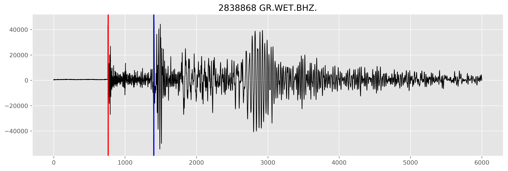
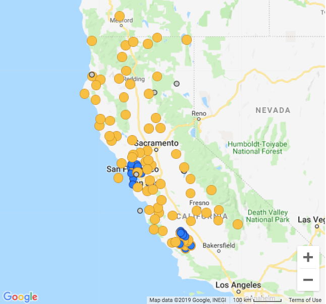
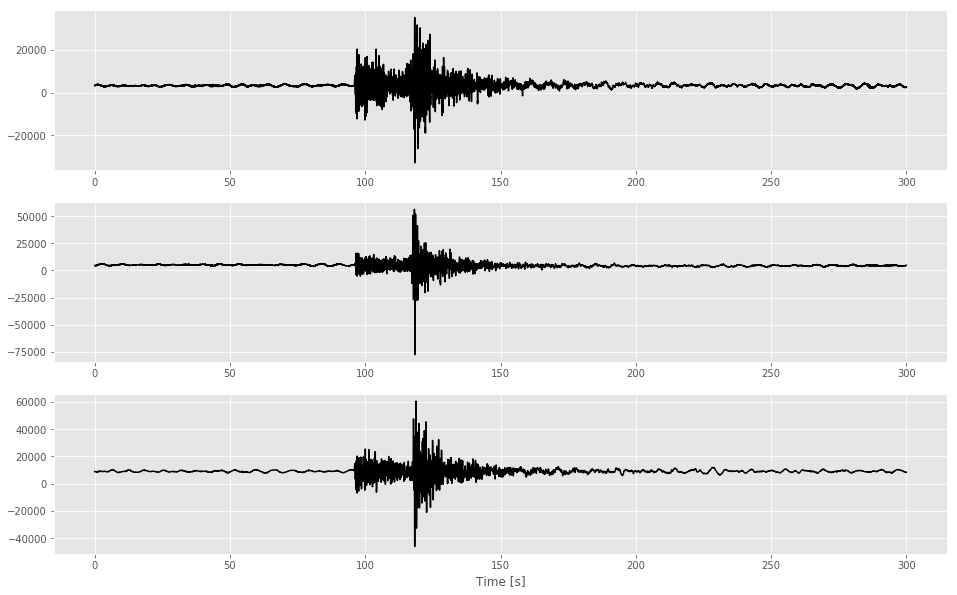
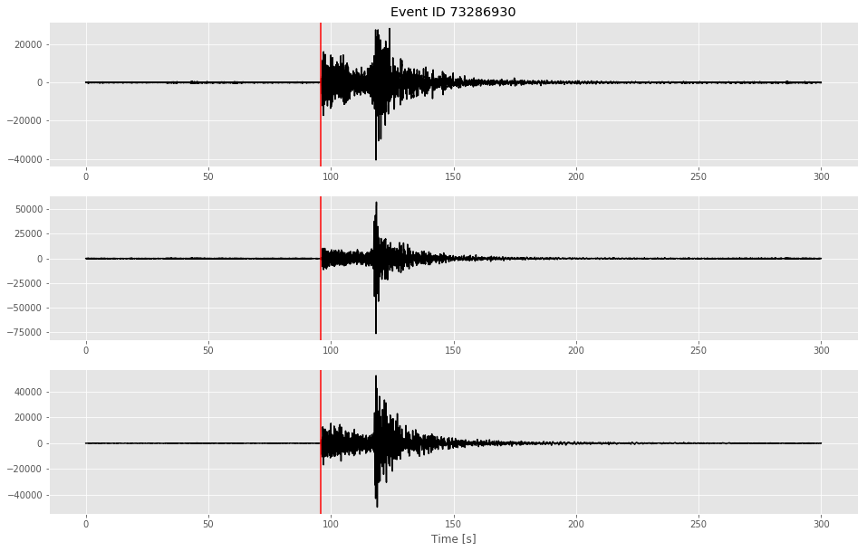

Identifying Seismic Waves with Convolutional Neural Networks [Part I]
Introduction
Earthquakes are unpredictable. And if you are a Californian Native like me (or happen to live near an active earthquake fault), chances are you have felt ground shaking caused by an earthquake. There is no algorithm to predict earthquakes. However, the physics governing seismic wave propagation allow us to prepare ourselves from shaking once an earthquake has occured.
Seismic waves travel slower than light (i.e. the speed at which emails, txts, travel). It is therefore possible to send a warning about incoming ground motion shaking after an earthquake has occured. This is the main idea behind Earthquake Early Warning. The idea being that, if we are a certain distance away from the earthquake hypocenter, we could send a warning (somewhere between seconds to a minute or two) via a txt, email, app. etc to someone else who is in the direction of the incoming seismic waves.
In order to send an earthquake early warning, however, seismologists need to have a high level of certainty that: 1) the ground motion recorded by a seismometer is in fact an earthquake and not background noise (e.g. someone walking near a sensor) and 2) the location of the earquake.
Luckily we have computers to accomplish this. Unfortunately, typical detection systems take about a minute to send an earthquake alert. This is partly due to the fact that it takes time to both: get enough information from several seismometers and process the data.
Can Machine Learning, specifically Deep Learning, give us an alternative approach? An approach which is more accurate and/or faster? More specifically, can we train a deep neural network to help us identify features in seismic records which will allow us determine if an earthquake has occured and if yes, where is it?
To make OUR grandiose problem more manageable, we will boil this problem down to a much simpler one:
In other words, let’s assume we have already identified the seismic record is in fact an earthquake. Our task is to now identify the location of the earthquake. To do this we need to know when the incoming wave was first spotted. In other words, we need to know when the first seismic phase has arrived. This phase is known as the Primary Phase (or P-wave) and is marked with a red vertical line in the image below.
 Figure: Earthquake recorded by a seismometer in Wettzell, Germany. The red vertical line notes the Primary Phase, the first seismic phase recorded by the seismometer. The blue vertical line depicts another type of surface phase known as the Secondary Phase. To identify the phases a human (or computer) is looking for a change in both amplitude and frequency. The x axis is in units of number of samples (npts).
The p-wave travels the faster than other phases (e.g. the S-phase shown above), however the frequency and the polarization (direction) of these waves tends to not cause structural damage (depending on how large the earthquake is, of course). The more destructive seismic phases, known as surface waves, take longer to arrive than the p-wave. The further you are from the earthquake, the larger the time lag between the p-wave and these destructive surface waves. Thus, if we can detect the p-wave (and accurately) we can then compute how much time a person has before they should expect ground motion shaking.
In this two-part tutorial we will establish the following machine learning workflow:
Download seismic data → Pre-process data & format it for training → Decide which DNN to use and create it → Train model → Analyze Results
For the sake of making the tutorial a little more digestable, we will split the tutorial into two parts. Part I (this post) will focus on: framing the problem, how to download data, and pre-processing the data we have downloaded.
Table of Contents
Framing the Problem
Let’s begin! Before we download data let’s go over the details of how we will accomplish our objective. Remember our goal is to identify where the first seismic phase, i.e. the p-wave, is in our records. Our plan of attack will be to use a Convolutional Neural Network (CNN). Convolutional neural networks are a type of deep neural network that handle data that is either time or spatially dependent, such as seismograms (time-dependency) or images (spatial dependency) just to name a couple of examples.
Our data will consist of seismograms of earthquake events recorded by seismometers in California. The seismic records we collect and process are the input to our CNN. Our labels will consist of scalar-valued, p-wave picks made by seismologists (e.g. the point the vertical line crosses on the x-axis in the image above). Thus, for each training instance, we will give our CNN a seismic record (time-series array) as input, x, and its associated p-wave location as its label, y.
During training our neural network will try to identify which features are relevant in the waveforms that allow it to accurately determine where the p-wave. Visually, we as humans can tell where this is by looking in a sudden chance in both frequency and amplitude.
In our case we have two different options of how we can feed our CNN our data. We can either feed it images or we can keep the data in arrays. If we choose the former, we will need to define a 2D convolutional neural network. Alternatively, we can use a 1D CNN and keep our data in arrays. Since I want to have as output arrays for further processing, I’ll keep my data in its original 1D format, as it will make future analysis easier.
Groovy. We now have a more solid outline of what we need to do. Let’s now download some data!
Downloading Seismic Data
Now that we have a gameplan, let’s get our hands dirty and download some seismic data. Luckily for us, the vast majority of earthquake data centers are open and free for public use. In California there are two well-known data centers, the Northern California Earthquake Data Center and the Southern California Data Center.
We’ll use data recorded from stations in Northern California. You can find a list of stations, their state of health, and history from the NCEDC website.
 Figure: Subset of seismic stations in Northern California. Yellow circles depict broadband stations and blue depict borehole stations. Courtesy of the NCEDC.
I will pick some of my personal favorite stations for this tutorial, but feel free to check out others and see what their data looks like in comparison. There is a nifty Python library known as ObsPy which makes accessing seismic data quick and easy. Let’s import ObsPy along with some other Python libraries and check out how our data looks like:
import os
import numpy as np
import pandas as pd
from obspy.clients.fdsn import Client
from obspy import Stream, UTCDateTime
from obspy.core.event import read_events
import matplotlib.pyplot as plt
plt.style.use('ggplot')
Let’s look at how one of these events look like as recorded by a broadband seismometer. You’ll notice that in this example I have picked a specific network, station, and channels. Feel free to use * to specify all in ObsPy. This will return a list of several networks, stations, locations, and channels to use for the time duration specified for start time and end time parameters.
For the sake of having a ‘nice’ waveform to look at, I’ll manually specify the time of a known earthquake event. (There are more clever ways of querying for earthquakes, but let’s keep it simple and look at just one example). Specifically, I’ll download a recent (as of writting this post) earthquake off the cost of San Francisco.
network = "BK"
station = "CMB"
location = "*"
channel = "BH*"
starttime = UTCDateTime("2019-10-05T15:40:00")
endtime = starttime + 300
client = Client("NCEDC")
stream = client.get_waveforms(network = network, station = station, location = location,\
channel = "BH*", starttime=starttime, endtime=endtime)
Quick Note About ObsPy's Stream Object
The following is directly from [ObsPy’s Documentation] page (https://docs.obspy.org/packages/obspy.core.html): Seismograms of various formats (e.g. SAC, MiniSEED, GSE2, SEISAN, Q, etc.) can be imported into a Stream object using the read() function.
Streams are list-like objects which contain multiple Trace objects, i.e. gap-less continuous time series and related header/meta information.
Each Trace object has the attribute data pointing to a NumPy ndarray of the actual time series and the attribute stats which contains all meta information in a dict-like Stats object. Both attributes starttime and endtime of the Stats object are UTCDateTime objects. A multitude of helper methods are attached to Stream and Trace objects for handling and modifying the waveform data.”
For example, for each recording our station records motion in three different directions: a vertical motion (up-down) and two horizontal motions (N-S and E-W). Thus, our Stream object has three Traces.
stream
3 Trace(s) in Stream:
BK.CMB.00.BHE | 2019-10-05T15:40:00.019538Z - 2019-10-05T15:44:59.994538Z | 40.0 Hz, 12000 samples
BK.CMB.00.BHN | 2019-10-05T15:40:00.019538Z - 2019-10-05T15:44:59.994538Z | 40.0 Hz, 12000 samples
BK.CMB.00.BHZ | 2019-10-05T15:40:00.019538Z - 2019-10-05T15:44:59.994538Z | 40.0 Hz, 12000 samples
Each Trace object has head information which we can access by printing the attributes:
trace0 = stream[0]
print(trace0.stats)
network: BK
station: CMB
location: 00
channel: BHE
starttime: 2019-10-05T15:40:00.019538Z
endtime: 2019-10-05T15:44:59.994538Z
sampling_rate: 40.0
delta: 0.025
npts: 12000
calib: 1.0
_fdsnws_dataselect_url: http://service.ncedc.org/fdsnws/dataselect/1/query
_format: MSEED
mseed: AttribDict({'dataquality': 'D', 'number_of_records': 7, 'encoding': 'STEIM2', 'byteorder': '>', 'record_length': 4096, 'filesize': 81920})
We’ll use this information to make some useful unit conversions in our plots.
sampling_rate = trace0.stats.sampling_rate
npts = trace0.stats.npts
delta = trace0.stats.delta
time = np.arange(0, npts / sampling_rate, delta)
Plotting this with Python’s Matplotlib we have:
rows = 3
fig, axes = plt.subplots(nrows = 3, ncols = 1, figsize = (16,10))
axes[0].plot(time, stream[0], color = 'black')
axes[1].plot(time, stream[1], color = 'black')
axes[2].plot(time, stream[2], color = 'black')
axes[rows - 1].set_xlabel('Time [s]')
Text(0.5,0,'Time [s]')

In addition to the training data we will need to also provide labels to our CNN. We are interested in training a CNN to identify the first arriving seismic phase, the p-wave. We can manually identify this by looking at the waveform and searching for a time where both the frequency and amplitude of the waveform changes drastically. In our example we can see this occurring at around 30 seconds. This is the label we will provide to our neural network.
Manually picking our entire data set is something we would have to do IF it were not for the fact that the NCEDC has had individuals manually pick earthquakes for decades and provided it for all to use. We’ll take advantage of their hardwork and simply make a query to download waveforms and their associated p-phase arrival time and store it into a Pandas DataFrame.
To find the manually picked phase arrival we’ll search through the archived catalogue of events using ObsPy’s get_events() method.
# Minimum magnitude earthquake to search for
minmag = 3.0
# Maximum search radius around station to look for events
maxrad = 2.697
stla = 38.03
stlo = -120.39
cat = client.get_events(starttime=starttime, endtime=endtime, latitude=stla, longitude=stlo,\
maxradius=maxrad, minmagnitude=minmag,\
includearrivals = True)
print(cat)
1 Event(s) in Catalog:
2019-10-05T15:41:06.570000Z | +37.660, -122.521 | 3.54 Mw | manual
station_picks = []
for n, event in enumerate(cat):
origin_info = event.origins[0].arrivals
for i, pick in enumerate(event.picks):
onset = pick.onset
polarity = pick.polarity
evaluation_mode = pick.evaluation_mode
evaluation_status = pick.evaluation_status
phase_time = pick.time
arrival = origin_info[i]
pick_id = pick.resource_id
pid = arrival['pick_id']
if pid != pick_id:
new_arrival = \
[arrival for arrival in origin_info if arrival['pick_id'] == pick_id]
if len(new_arrival) < 1:
continue
phase = new_arrival[0]['phase']
else:
phase = arrival['phase']
# EventID
eventID = event.resource_id.id.split('/')[-1]
# Let's convert from UTC to something we can work with
p_arrival = abs(stream[0].stats.starttime.timestamp - phase_time.timestamp)
print("EventID {}".format(eventID))
print("First seismic wave arrives {} seconds from the start of our record.".format(round(p_arrival, 3)))
EventID 73286930
First seismic wave arrives 91.86 seconds from the start of our record.
Let’s plot this to see how this looks like:
time = np.arange(0, stream[0].stats.npts / stream[0].stats.sampling_rate, stream[0].stats.delta )
fig, axes = plt.subplots(nrows = 1, ncols = 1 , figsize = (16,6))
axes.plot(time, stream[0].data, color = 'black')
axes.axvline(p_arrival, color = 'red')
axes.set_xlabel("Time [s]")
Text(0.5,0,'Time [s]')
As expected the p-arrival is pick made by the human analyst was made when there was a change in amplitude and frequency. In this case this happens at around 350 seconds.
Pre-Processing
If you have experience with signal processing, you already know there are a slew of tools to process audio recordings. We can use similar processing tools for seismic data. In particular, we’ll want to remove trends and filter out unwanted noise. Let’s do that with some of Stream’s useful methods:
# Both the detrend() and filter() operation is performed in place of the actual arrays.
# Let's make a copy of this Stream in order to have access to the original.
st = stream.copy()
# Detrend
st.detrend()
# Apply high pass filter
max_freq = (1/2)
st.filter(type="highpass", freq = max_freq)
3 Trace(s) in Stream:
BK.CMB.00.BHE | 2019-10-05T15:40:00.019538Z - 2019-10-05T15:44:59.994538Z | 40.0 Hz, 12000 samples
BK.CMB.00.BHN | 2019-10-05T15:40:00.019538Z - 2019-10-05T15:44:59.994538Z | 40.0 Hz, 12000 samples
BK.CMB.00.BHZ | 2019-10-05T15:40:00.019538Z - 2019-10-05T15:44:59.994538Z | 40.0 Hz, 12000 samples
Plotting the waveforms after applying our filters you’ll notice that the traces have less noise before the p-wave and after the signal trails off.
rows = 3
fig, axes = plt.subplots(nrows = rows, ncols = 1, figsize = (16,10))
axes[0].set_title("Event ID {}".format(eventID))
axes[0].plot(time, st[0], color = 'black')
axes[1].plot(time, st[1], color = 'black')
axes[2].plot(time, st[2], color = 'black')
axes[rows - 1].set_xlabel("Time [s]")
for i in range(rows):
axes[i].axvline(p_arrival, color = 'red')

Saving the Data
There are several file format options we have at our disposal. To keep things simple, we’ll use NumPy’s array method np.savez_compressed(), which is NumPy’s way of saving arrays into a compressed file format with file extension .npz. Once we have done a mass download of our waveforms, we’ll save our NumPy arrays using somthing like:
where array is a NumPy array with all of our seismograms and file_name is the name of the output file our NumPy arrays are saved in. For example, in this tutorial I used:
We’ll also need to make sure we save a separate NumPy array which will contains our labels, the p-wave picks. For example:
See the associated GitHub repository for the more technical details on how I did this.
Summary
In this tutorial we formally stated the problem, broke down a complicated problem into a more manageable one, downloaded time-series data and manually picked phase information, processed the data by applying filters and demeaning it, and we ended by saving it into a compressed file format (.npz). In the next blog we will go over how to: read in saved training data labels, format the data for training, build a baseline CNN model, train said model, make first-and make first-order interpretations.
Suggest Reading Material
Ackermann, Nils. “Introduction to 1D Convolutional Neural Networks in Keras for Time Sequences” Medium, 04 September 2018, https://blog.goodaudience.com/introduction-to-1d-convolutional-neural-networks-in-keras-for-time-sequences-3a7ff801a2cf
Géron, A. (2017). Hands-On Machine Learning with Scikit-Learn and TensorFlow: Concepts, Tools, and Techniques for Building Intelligent Systems. O’Reilly UK Ltd.
Information on Earthquake Early Warning provided by the U.C. Berkeley Seismological Laboratory
Stanford CS class CS231n: Convolutional Neural Networks for Visual Recognition.
Noah Luna
Recent MS Graduate Student
My research interests include applications of deep neural networks in seismology, theoretrical frameworks of deep neural networks, seismic sources, and time-series analysis.